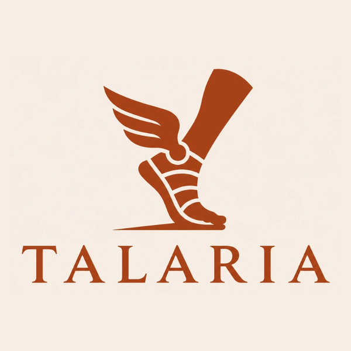

Talaria is a personal running coach app for iOS and Android. Connect your Garmin account, talk to an AI coach about your own training, and get a personalized plan whose workouts go straight to your watch.
Talaria is in private development.
Privacy Policy · talaria.privacy@gmail.com
Garmin and Garmin Connect are trademarks of Garmin Ltd. or its subsidiaries.